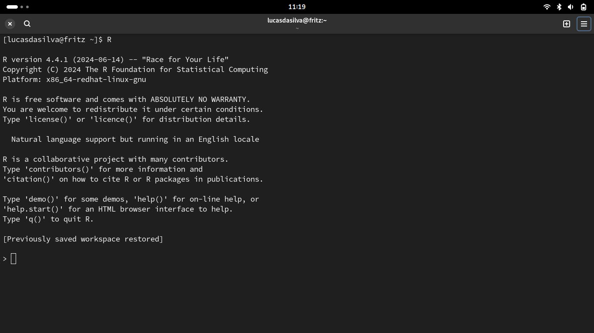
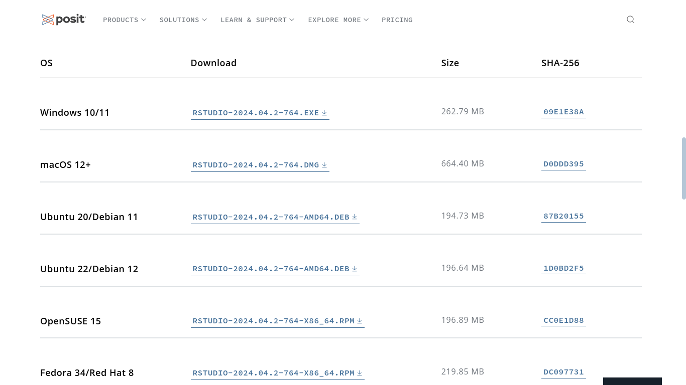
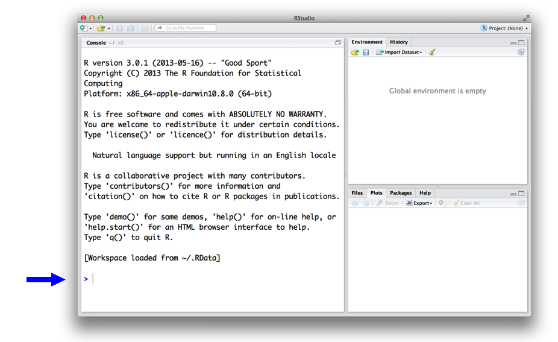

1 + 1
#> [1] 2R é uma ferramenta que busca auxiliar cientistas analizarem dados e que possui inúmeras excelentes funções built-in para a produção de gráficos e de modelos estatísticos. Consequentemente, muitos usuários do R usam a ferramenta como um software, aprendendo apenas quais funções necessárias para atingir seus objetivos e ignorando todo o resto.
Aprender apenas as funções necessárias do R para determinada tafera, como ciência de dados, é compreensível. De todo modo, aprender a programar e como a linguagem de programação R funciona deve estar nos planos de todo cientista de dados. Saber programar fará você um analista mais flexível e irá aprimorar sua excelência em data science em todos os aspectos, entender os fundamentos do R faz todo o processo de aprendizagem mais simples.
Primeiramente iremos aprender como baixar e instalar o R na sua máquina, baixar e instalar o RStudio e conhecer o seu layout de trabalho.
Instalando o R
Para começar, você deve ter sua própria cópia do R. Para nossa sorte, o R é totalmente gratuito e fácil de baixar.
R é gerenciado por um time de desenvolvedores que fazem a linguagem de programação disponível no CRAN. O CRAN oferece opções de download para o Windows, Mac e Linux.
Windows: Para instalar o R no Windows, selecione o link de download para Windows, no CRAN. Tenha certeza de escolher a versão “base” do R. Você vai baixar um instalador de programa. Execute o instalador. O instalador irá instalar o R no seu computador e adicionar um atalho na sua área de trabalho.
Mac: Para instalar o R no Mac, selecione o link de download para Mac. Clique no pacote da versão mais recente do R. Um instalador irá guiar o processo de instalação, onde os padrões são sensatos para a maioria dos usuários.
Linux: O R já vem pré-instalado em diversas distribuições Linux, mas você vai querer a versão mais recente do R se a sua estiver desatualizada. O CRAN oferece arquivos para as principais distros pelo link de download para Linux. O processo de instalação varia para cada distro. O CRAN demonstra o processo em sua documentação.
O R não é um programa que você simplesmente dá dois clicks para começar a usar, como o Microsoft Word ou Google Chrome. R é uma linguagem de programação, como Python, C, Javascript ou Rust. A maneira de usar o R é escrever comandos na linguagem R e pedir para seu computador interpretá-los. Antigamente, as pessoas executavam o código em R diretamente na linha de comando. Hoje em dia quase todo mundo usa um aplicativo para escrever código em R chamado RStudio e eu recomendo que você faça o mesmo.

Instalando o RStudio
Agora sim, Rstudio é um programa como o Microsoft Word ou Google Chrome, exceto que ao invés de te ajudar a escrever em português ou navegar na internet, o RStudio te ajuda a em escrever em R e a criar scripts. Existem outros aplicativos para auxiliar o código em R, mas recomendo o RStudio pois ele faz escrever código em R (e em outras linguagens de programação, como Python) muito mais simples.
Você pode baixar o RStudio de graça, apenas seguir os passos no site da Posit. Uma vez instalado o RStudio, você pode abrir como um programa qualquer.

Quando você abre o RStudio, uma janela aparece com três painés. O maior painel é uma janela do console (onde o código em R é executado e onde os resultados são observados). O painel do console é exatamente o que você veria se usasse o R em linha de comando. Todo o resto é único do RStudio. Em outros painéis estão um editor de texto, uma janela para gráficos, um gerenciador de arquivos e muito mais. Para o painel do editor de texto (também chamado source) aparecer no layout do RStudio, basta criar um script do R (Arquivo > Novo Arquivo > R Scripts ou pelo atalho Ctrl + Shift + N).

A UI do R
Antes de você entrar em contato com o seu computador, primeiro você deverá aprender a como falar com ele. É nessa parte que o R e o RStudio entram em cena. RStudio é a forma de como se comunicar com o seu computador. R é o idioma que você conversa com ele.
Para darmos início, abra o RStudio como outro programa qualquer. Quando você abre o RStudio, uma janela deve aparecer na sua tela como essa janela abaixo.

Seu computador recebe seus comandos quando você escreve código em R no final do painel do console. Não esqueça de pressionar o botão de Enter para que o comando seja executado. O console aparece no painel da esquerda, mas você pode mudar o layout dos painés se preferir, em Arquivo > Preferências.
A interface do RStudio é simples. Você escreve seu código em R na última linha do painel do Console no RStudio e pressiona Enter para executar. O código que você escreve é chamado de comando, pois você está dando uma ordem ao computador para fazer algo para você. A linha em que você escreve o comando é chamada de linha de comando.
Quando você digita um comando na linha de comando e pressiona Enter, seu computador executa o comando e mostra os resultados. Por exemplo, se você digitar 1 + 1 e pressionar Enter, o RStudio vai mostrar o seguinte:
Essa é sua primeira mensagem na linguagem de programação R. Para iniciar a falar em R com o seu computador, fique atento aos próximos posts no blog.